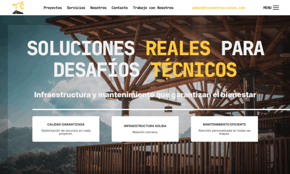

Proyectos Profesionales
Soluciones digitales diseñadas para optimizar procesos empresariales reales

Portafolios digitales
Cree diversos sitios web profesionales que muestra con orgullo los proyectos y logros en los que he sido participe.

Gestor de tiempos
Diseñamos una app móvil sencilla para que cada persona pueda registrar y organizar su jornada de forma cómoda y rápida.
Control inventarios
Desarrollamos esta herramienta para poder llevar un control claro y automático de todos nuestros materiales y equipos.
Creador de APU's
Esta aplicación nos ayuda a calcular y armar APU’s de forma ágil, haciendo más fácil preparar presupuestos.